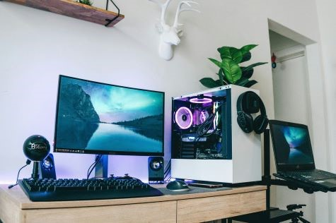

Central Processing Unit
Core Count and Clock Speed and their Impact on Performance
The CPU, or central processing unit, is the brain of the computer, defined by 2 main performance characteristics: Core Count and Clock Speed. For consumer processors choosing is straightforward: higher-tier models offer more cores and faster clock speeds. However, workstation processors and server processors present a more complex landscape, with specifications tailored to specific workloads.
Both core count and clock speed significantly impact application performance and efficiency. Understanding their trade-offs is essential for deciding which processor best suits your needs.
Core count and clock speed are like a team of workers: core count represents the number of workers available, while clock speed determines how quickly each worker completes their individual tasks.
Core Count - Parallel Processing Power
Core count refers to the number of independent processing units in your CPU. Each core can execute instructions simultaneously, enabling parallel processing.
Key benefits of higher core counts:
- Handle multiple tasks at once
- Essential for parallelizable HPC applications like data analytics and cloud virtualization
- More cores = more simultaneous workers completing independent tasks
Limitations:
- Single-threaded workloads don't benefit from additional cores
- Sequential tasks (where each step depends on the previous one) cannot be accelerated with more cores
Clock Speed - Sequential Task Performance
Clock speed, measured in gigahertz (GHz), determines how fast each core executes instructions. Higher clock speeds mean faster completion of individual tasks. All workloads will want the highest clock speed if possible. But in reality, the trade-off for additional cores is to lower the clock speed or to increase power (and thus cooling). Unfortunately, we have to choose.



When clock speed matters most:
- Sequential or single-threaded workloads
- Applications that cannot leverage parallel processing to a large extent
- HPC simulations where calculations depend on previous results
Good CPU speeds
When considering what a good CPU speed is, it’s important to understand that higher numbers generally mean better performance. However, processor speed isn’t the only factor that determines a CPU’s performance. Here are some key points to consider:
For general use: A CPU speed of 1.6 GHz to 2.5 GHz is typically sufficient for everyday tasks like web browsing, word processing, and basic multimedia.
For gaming: Generally, a speed of 3.5 GHz to 4.0 GHz is considered good for gaming, but single-thread performance is more important than raw speed.
For professional use: Content creators, data analysts, and other professionals might need speeds of 4.0 GHz and above, depending on their specific applications.
These are general guidelines. The actual performance can vary based on the CPU’s architecture, number of cores, and other factors.
Overclocking
Overclocking is basically messing with the CPU to have it run at a faster frequency than it is factory defaulted to. This is estimated as the “boosted clock” frequency. There are some risks to overclocking your CPU, like it may lessen the life-span of your CPU, and make it run hotter, but in the end, it’s really just pushing your CPU to its limits. Overclocking is not necessary, it’s really for the novelty of having that extra power. Please note that your motherboard should support overclocking in order to do this.
CPU that runs at extremely fast rates is not only a problem for overheating, but can lessen the life-span of the hardware in general.
CPU cooler
Essentially, this is just a fan that cools the CPU. You DO NOT want your CPU to overheat. Some CPUs come with a fan when you purchase them. Some don’t. If you need one, you can get away with a cheap one.
The brand
The main two brands are Intel and AMD. Intel has been the big brand name, more expensive top competitor in the market. Then, in 2017, AMD released their “Ryzen” line of CPUs, which were much more affordable compared to their Intel counterparts. In the end, Intel is more expensive, better quality, but only support overclocking in some of their CPUs. AMD is cheaper, still very good quality, and support overclocking in all of their Ryzen CPUs. Say what you want about either brand, but it really comes down to preference.
The most essential factor of them all: compatibility
As said earlier, Intel and AMD are the main brands that make CPUs. And their CPUs are only compatible with their respective motherboards. Make sure your CPU is compatible with your motherboard.